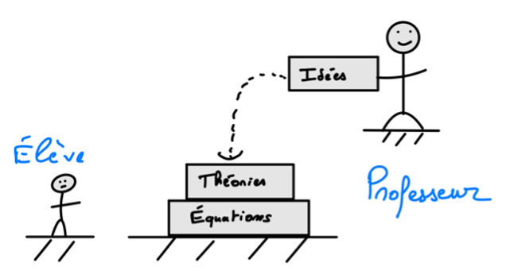
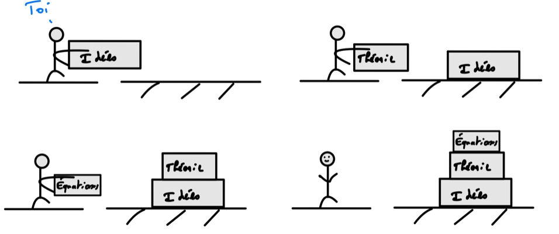

Introduction (à la Physique)#
Note : Ce chapitre introduit quelques notions de terminale que tu n’as pas encore vue. Ces notions sont bien sûr expliquées en détail plus loin dans le livre. Tu peux lire dès maintenant cette introduction et la relire quand tu auras travaillé ces chapitres. Tu en auras peut être une autre compréhension :blush:
Comment définirais-tu la Physique ? Essaye d’y réfléchir une petite minute. … Alors, est-ce un ensemble de règle qu’on applique ? des équations plus ou moins logiques ? Une matière abstraite, concrète ? Des règles immuables qui régissent l’univers ?
Je vais essayer de te donner ma définition, ou en tout cas une définition qui peut t’être utile pour appréhender ton programme et tout ce qu’on t’enseigne. Tout d’abord, la Physique se base sur l’observation, et même elle est observation. Quand Newton cherche à expliquer la chute des corps, c’est qu’il a observé une pomme lui tomber dessus. Le point de départ est aussi bête que ça. Tout ce qu’on cherche à expliquer en Physique vient en très large majorité de ce que l’on observe. Une fois que l’on a observé un phénomène (une pierre glisse sur une pente, le soleil qui fait chauffer les vitres…), les physiciens cherchent à l’expliquer. On appelle un tel phénomène une expérience physique. Est-ce que c’est là que les équations rentrent en jeu ? Et benh, pas vraiment. Il y a plusieurs siècles, les physiciens étaient aussi des philosophes et n’avaient pas de maths pour expliquer le monde (pas de vecteurs par exemple). En fait l’idée que le monde puisse être expliqué grâce aux maths ne coule pas de soi, c’est Galillée (tu sais, celui qui a aussi dit que la terre n’était pas le centre de l’univers) qui l’introduit en 1623 en déclarant :
« L’univers est écrit en langage mathématiques »
Pourtant, même après Galillée, les maths pour expliquer le monde ne sont pas toujours là et les physiciens continuent à expliquer le monde avec leurs mots. Par exemple la 2ème loi de Newton a été présentée sans vecteurs, sans équation :
« Les changements qui arrivent dans le mouvement sont proportionnels à la force motrice ; et se font dans la ligne droite dans laquelle cette force a été imprimée. »
On est loin de \(m \vec{a} = \vec{F_{ext}} \) que tu verras cette année (ou dans quelques pages). On peut donc faire de la Physique sans équation, juste avec des idées. Et c’est la première idée centrale de ce livre : pour expliquer le monde, on a besoin d’idées, pas d’équations. Les maths arrivent en second lieu pour parfaire cette compréhension. En Physique, les maths sont un outil, jamais une finalité. Par exemple, revenons à la pierre qui glisse sur une pente. Une fois le phénomène observé, on peut se demander si une pente plus grande ferait glisser la pierre plus vite (ou si la vitesse de glissement dépend de la masse). Pour la question de l’angle, s’il il n’y a pas de pente, la pierre ne bouge pas, si la pente est maximale, c’est à dire forme un angle droit avec le sol, la pierre subira toute la gravité entre les deux. Entre les deux, la vitesse de chute augmente avec l’angle. On peut répondre à cette question sans aucune équation : (Pour la deuxième, on peut aussi le faire juste avec les mots (ou avec les mains comme on aime dire :blush: ) mais le raisonnement est un peu plus long. ) Pour comprendre plus finement le phénomène, et par exemple obtenir l’évolution de la vitesse selon l’angle, on peut utiliser les mathématiques pour proposer un modèle de la situation. Quelque chose comme ça :
Qu’est-ce qu’un modèle ? C’est au centre de la Physique, et pourtant je ne pense pas que je l’avais compris pendant mon lycée. Proposer un modèle c’est tenter d’expliquer une situation en faisant quelques hypothèses. Par exemple, on considère un cas où le sol est sec et où il n’y a pas de frottements de l’air. Ces hypothèses sont parfois explicites et souvent sous entendues. Elles conditionnent la mise en équation qu’on fera. Qu’est qu’un bon modèle ? Tout d’abord, il doit nous permettre d’expliquer notre situation de départ. S’il est trop compliqué (par exemple si on prend en compte la position du soleil pour expliquer que la pierre glisse), il sera impossible d’en tirer une conclusion. A l’inverse, s’il est trop simple, la conclusion est inintéressante (Supposons que la pente est toujours quasiment nulle, la pierre ne bouge pas, youhou !). Pour résoudre ce modèle, on fait souvent appel à des lois, il s’agit de formule ou de concepts, que l’expérience a permis de vérifier. N’oublie pas, l’expérience est reine en Physique, et non le modèle ! Dans notre exemple, résoudre le modèle consiste par exemple à trouver la vitesse de la pierre en fonction de l’angle. Une fois que ce modèle a permis d’expliquer notre situation, il doit nous permettre de prévoir. Mais de prévoir quoi ? Tout simplement, les résultats d’une autre expérience similaire avec des caractéristiques différentes, par exemple quelle sera la vitesse de la pierre si on double la pente ? Imaginons que notre modèle prévoit une vitesse de 2 m/s pour la pierre, et que l’on mesure en réalité 2.2 m/s. Alors on jette tout, on recommence ? Et … non. Le modèle se base sur des hypothèses qui ne sont jamais vraiment vérifiées (l’absence de frottements par exemple). Et un modèle qui prévoit à 91% le bon résultat (Ici 100\frac{2}{2,2}=91%), c’est un modèle correct. C’est la raison pour laquelle on t’apprend en Physique des conclusions qui semblent parfois absurdes. Par exemple, tu as appris l’année dernière le principe d’inertie qui stipule que tout corps soumis à aucune action extérieur, peut perdurer dans un mouvement rectiligne et uniforme, à vitesse constante donc. Est-ce valide du point de vue de l’observation ? Par exemple tu vas bientôt apprendre que deux corps chutent à la même vitesse quel que soit leur masse (j’y reviendrai plus loin dans le livre), est ce que c’est juste ? d’un point de vue de l’observation : non. Tu n’observeras jamais dans la vie de tous les jours une bille et un livre tomber à la même vitesse, on raconte que Galilée a essayé en haut de la tour de Pise, et évidemment ça n’a pas marché :
En réalité le modèle de la chute libre suppose l’absence d’air. C’est pour ça que tu n’as jamais observé ce phénomène. Si on vide l’air d’une pièce et qu’on fait tomber un marteau et une plume, ils tombent à la même vitesse, l’expérience a été faite dans un silo gigantesque, et ça fonctionne, ouf :blush: Alors pourquoi on continue à t’apprendre ça ? Eh benh parce que c’est l’un des seuls modèles que l’on sait résoudre à la main facilement, sans ordinateur et que les conclusions ne sont pas si fausses. Il faut bien commencer quelque part.
Une fois encore, l’expérience est reine, et un modèle dans lequel on applique une loi donne rarement des résultats parfaitement exacts. En général, on commence par le modèle le plus simple, on compare les résultats, puis on complexifie le modèle si besoin. Par exemple en ajoutant un terme de frottements de l’air dans l’équation de la chute libre.
Une fois que l’on a dit ça, on a fini ? Presque. Parfois, un modèle ou une loi fonctionne super bien pour pleins de trucs, puis on découvre un couac. Par exemple la 2ème loi de Newton permet d’expliquer le comportement des planètes, de tout ce qui bouge sur terre et de certaines molécules ou atomes. Pourtant, en 1781, l’astronome Urbain Le Verrier (si si, je t’assure c’est son nom) observe une planète, Uranus, dont la trajectoire ne suit pas celle prédite par la loi de Newton, même en complexifiant le modèle. Est-ce la conclusion que la loi est fausse ? ça aurait pu, mais en réalité une autre planète venait perturber l’orbite d’Uranus. Le Verrier a calculé la masse et la position d’un tel objet, a demandé à un ami de pointer son télescope, et ils ont découvert Neptune ([1]). Non seulement la loi de Newton est sauvée mais encore une fois validée ! Ici, le modèle de départ était simplement faux, à changer pour prendre en compte la réalité.
schéma
Suffit-il toujours d’ajouter quelque chose ou parfois les lois aussi peuvent montrer leur limite ? Tu te doutes surement de la réponse. Par exemple si un objet dépasse 10% de la vitesse de la lumière (donc $0,1\ast c=0,1\ast{3.10}^8=30\ 000\ 000\frac{m}{s}$), la deuxième loi de newton ne prévoit plus du tous les bons résultats. Deux possibilités dans ce cas, soit la loi est nulle, ou fausse, ou incomplète, soit on a mis le doigt sur quelque chose. Comme l’a illustré l’exemple précédent, la loi de Newton n’est ni nulle ni fausse :blush: Le problème des objets très rapides a été l’un des problèmes qu’Einstein a expliqué avec la théorie de la relativité restreinte. Puis celle-ci a montré ses limites sur certains phénomènes, et s’en est suivi le siècle des plus grandes découvertes Physiques de l’histoire.
Voilà, c’était un peu long, mais avec ça tu pars sur de bonnes bases ! Peut-être te poses tu d’autres questions, gardes les en tête ! Pour le moment je te propose de retenir que la Physique cherche à expliquer nos observations, le plus fidèlement possible.Cette introduction avait pour but de t’introduire la physique, je l’ai expliqué en utilisant quelques concepts de cette année, pas de panique, tout est expliqué en détail dès le chapitre suivant.
En résumé, l’enseignement de la physique suit souvent un schéma assez descendant qui ressemble à ça :

Ce que te propose ce livre, c’est de t’approprier les concepts de ton programme pour en arriver aux exercices types, quelque chose comme ça :
